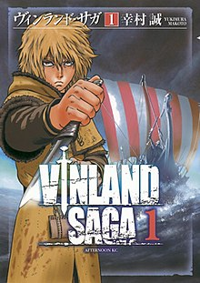
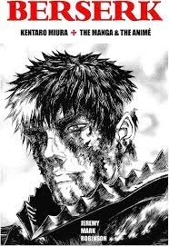
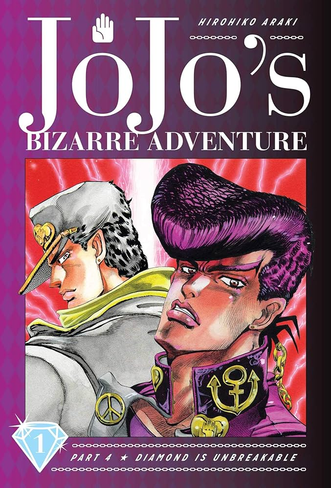

Taking place in a fantasy world, the story follows Frieren, an elven mage, as she embarks on a journey to reach the resting place of souls in order to reunite with her former comrade Himmel, whose Hero Party once slew the Demon King.
Date of release: May 13, 2020
Status : Ongoing
Vinland Saga

Thorfinn is son to one of the Viking's greatest warriors, but when his father is killed in battle by the mercenary leader Askeladd, he swears his intent to have revenge. Thorfinn joins Askeladd's group in order to challenge him to a duel, and ends up caught in the middle of a war for the crown of England.
Date of release: April, 2005
Status : Ongoing
Berserk

Set in a medieval Europe-inspired dark fantasy world, the story centers on the characters of Guts, a lone swordsman, and Griffith, the leader of a mercenary band called the "Band of the Hawk".
Date of release: August 25, 1989.
Status : Ongoing
Bleach
Bleach follows the adventures of a teenager Ichigo Kurosaki, who obtains the powers of a Soul Reaper—a death personification similar to a Grim Reaper—from another Soul Reaper, Rukia Kuchiki.
Date of release: August 7, 2001
Status : Completed
Jojo's Bizarre Adventure

Late 19th-century England, Jonathan Joestar, the young son of a wealthy landowner, meets his new adopted brother Dio Brando, who loathes him and plans to usurp his position as heir to the Joestar family. When Dio's attempts are thwarted, he transforms himself into a vampire using an ancient Stone Mask and destroys the Joestar estate
Date of release: January 1, 1987.
Status : Ongoing